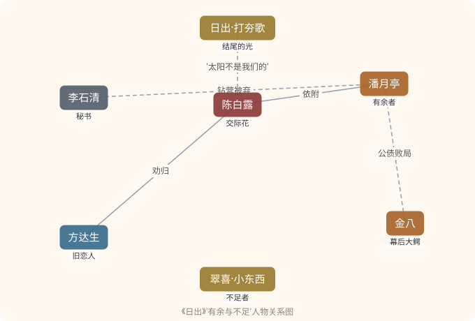

日出
一、基本信息
| 作者 | 曹禺 |
|---|---|
| 成书/出版 | 1936年出版并演出（Britannica：Richu (1936; Sunrise)） Cao Yu — Encyclopaedia Britannica（百科全书） |
| 国别/地区 | 中国 |
| 时代 | 现当代 · 现代 |
| 体裁 | 话剧（四幕剧） |
| 语言 | 汉语（白话） |

《日出》'有余与不足'人物关系图（人物关系图）
二、创作背景
Britannica（Cao Yu 条）：Richu (1936; Sunrise)——继《雷雨》（1934）的第二部名作。
结构创新：与《雷雨》的锁闭式不同，《日出》采用'横断面'写法——Third-person 人物进出如走马灯，主角陈白露在第三幕才淡出（通说）；第三幕整幕写宝和下处（妓院）——出版时曾被删（通说待核）。
'损不足以奉有余'：老子语作为卷首题词（原文意，通说待核）——全书的主题句；另附数段引文（莫尔甘《古代社会》等——通说待核）。
三、内容脉络
交际花陈白露住在大旅馆——'太阳要升起来了，我要睡了'（原文意，待核）的颠倒生活；旧恋人方达生来找她'回去'——她自嘲'我要人养活我'（原文意，待核）。
酒店众生：银行家潘月亭的公债投机、李石清（秘书）的钻营与被弃、小职员黄省三的投河、'富孀'顾八奶奶、面首张乔治——大旅馆的'有余者'与'不足者'。
宝和下处（第三幕）：翠喜、小东西等妓女的底层世界——'女人活着就是受罪'（原文意，待核）；小东西被卖后自缢。
结局：金八（幕后金融大鳄）使潘月亭破产；陈白露债台高筑——服安眠药自尽：'太阳升起来了，黑暗留在后面。但是太阳不是我们的，我们要睡了'（原文，公有领域）；窗外打夯工人的歌声——日出与工人的'光明'对照。
四、主要人物表
| 人物 | 身份 | 说明 |
|---|---|---|
| 陈白露 | 交际花 | 曾经的'女学生'——'竹均'的名字被遗忘——自杀于日出前的' Sleeping Beauty' |
| 潘月亭 | 银行经理 | 公债赌局的输家——'有余者'的虚妄 |
| 李石清 | 银行秘书 | 钻营的小人物：被用后即弃——'有余/不足'的中间层 |
| 黄省三 | 小职员 | '我恨你们！'（原文意，待核）——被逼疯的受害者 |
| 翠喜、小东西 | 妓女 | 第三幕的'不足者'——底层女性 |
| 方达生 | 诗人·旧恋人 | '日出'的见证者——走向工人歌声的结尾（通说） |
| 金八 | 幕后大鳄 | 从未出场却主宰一切——'看不见的手'（通说） |
五、主题与艺术特点
- '损不足以奉有余'：老子语的现代社会剧——金钱社会的全景（通说）。
- '日出'的象征：陈白露睡在日出前——'太阳不是我们的'（原文，公有领域）——光明属于劳动者（通说解读）。
- 横断面结构：无中心情节、群像与片段——话剧文体实验（通说）。
- 女性的两种命运：陈白露（上层的花瓶）与小东西（底层的奴隶）——同构的毁灭（通说）。
六、影响与评论
- Britannica（Cao Yu 条）：Richu (1936; Sunrise) 列于其 major plays——'adapted as opera (1982) and film'（改编为歌剧1982与电影——Britannica）。
Cao Yu — Encyclopaedia Britannica（百科全书） - Britannica：曹禺为'widely seen as a founder of modern Chinese spoken drama'（现代话剧奠基人）——《日出》与《雷雨》双峰。
Cao Yu — Encyclopaedia Britannica（百科全书） - 演出史：1956/1981年人艺版等（通说待核）。
Cao Yu — Encyclopaedia Britannica（百科全书） - 文学史地位：与《雷雨》《原野》《北京人》并称曹禺四大名剧（通说待核）。
Cao Yu — Encyclopaedia Britannica（百科全书）
七、阅读建议
难点
- 群像无中心——按'有余者/不足者'两极读。
- 第三幕妓院戏的时代语言——需要注释。
- '日出'与'打夯歌'的象征对照——注意结尾的声音设计。
- 《曹禺选集》（人民文学出版社）：标准。
- 《日出》单行本（人民文学出版社）：通行。
通读四幕 → 精读陈白露独白（第三幕结尾前——原文意）与小东西线 → 对照《雷雨》看曹禺结构法之变。
八、待核实
- 1936年《文季月刊》连载（通说待核）与文化生活出版社单行本细节待核。
- 卷首引文（老子/《圣经》/莫尔甘）的逐字核对。
- 第三幕被删史（初版后批评界反应——通说待核）待核。
- 1982歌剧与电影改编信息待核。
本页主要来源
曹禺的其他收录作品：雷雨